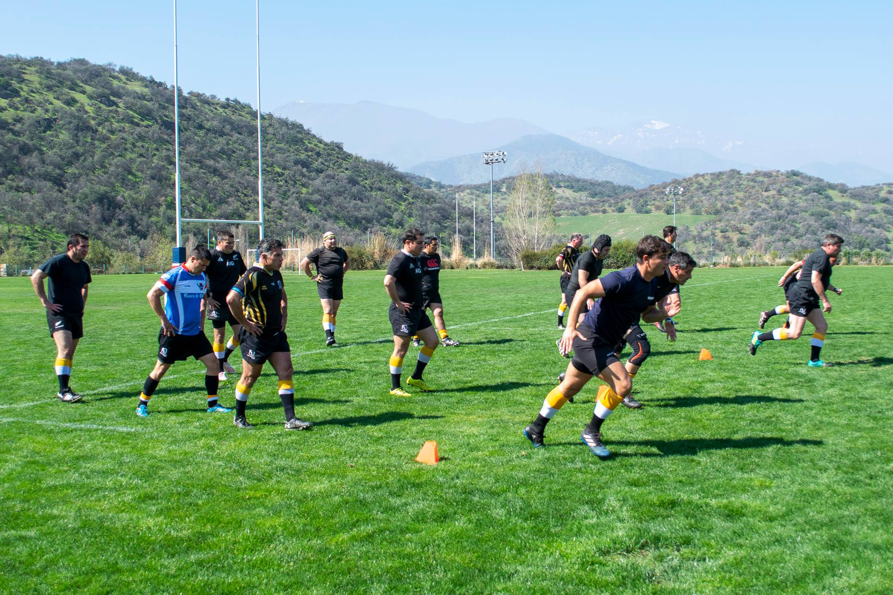
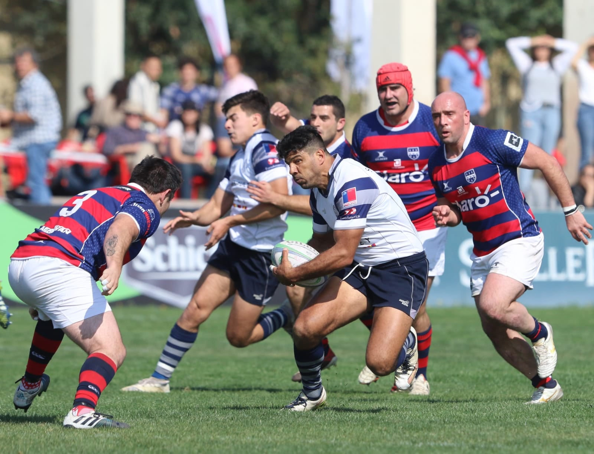

Craighouse Old Boys & Girls, COBS & COGS, es un club deportivo fundado en 1972 por ex alumnos del colegio Craighouse School para dedicarse inicialmente a la práctica del rugby. Luego que el colegio se transformara en mixto, en 1978 se incorporan las mujeres y el hockey césped.Aunque en algunos momentos de la historia también se agregó el fútbol, hoy en día contamos con los dos deportes nombrados anteriormente, los que trabajamos a niveles adulto, juvenil y formativo, estando afiliados a la Federación de Rugby de Chile (Chile Rugby), Asociación de Rugby de Santiago (Arusa) y Federación de Hockey de Chile (Fehoch).Actualmente, con los jugadores inscritos en nuestras distintas secciones, más sus núcleos familiares, contamos con un universo cercano a las 2.000 personas, quienes comparten los valores del club –familia, compañerismo y pasión– en un ambiente que potencia tanto la recreación como la consecución de objetivos deportivos.

NOTICIAS
COBS PRIMERO EN EL TOP 8 Y EN SEMIFINALES ANTE OLD BOYS
La primera de COBS finalizó la fase regular de la mejor manera. En un partido reprogramado por la fecha 12 del torneo Top 8 de ARUSA, los dirigidos por Mark Cross enfrentaban al hasta entonces líder Old Macks. Con una actuación sobresaliente en las distintas fases del juego, los rojiazules tuvieron un partido casi perfecto y consiguieron una victoria holgada por 45 a 14, que les permitió sumar cinco puntos y quedarse con el liderazgo del torneo.El primer tiempo fue un monólogo del conjunto local. Desde el comienzo, COBS se mostró sólido defensivamente, con tackles precisos y una gran disposición para jugar en campo rival. A los 4 minutos, Gonzalo Lara abrió el marcador de penal y a los 20, estiró la ventaja nuevamente pateando a los palos para poner a COBS 6 a 0 arriba. El primer try del partido llegó por medio de Vicente Contreras a los 29 minutos y cinco minutos más tarde José Ignacio Escobedo marcó el segundo, ambos con conversión de Gonzalo Lara. De esa manera, los locales se fueron al descanso con un contundente 20 a 0 sobre el conjunto de Reñaca.
